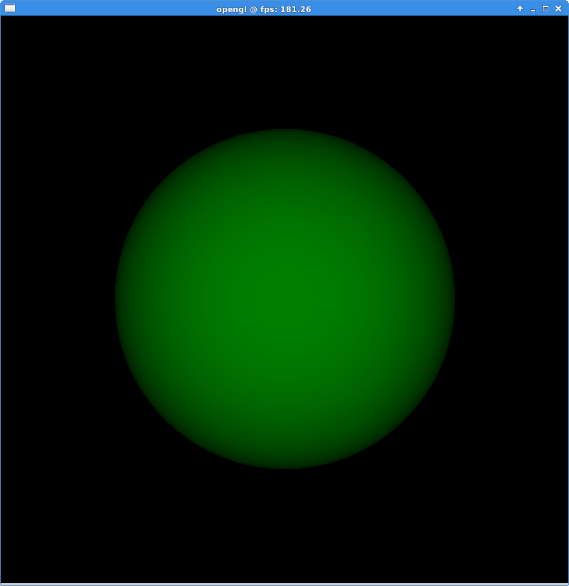

Yesterday, I upgraded the previous post's single-threaded CPU-based ray-tracer demo. I replaced the CPU-based ray-tracing operations with compute shaders, which use the parallelism of the GPU. This gave me a speed up of more than 10 times. The documentation/instruction material available for this, rather new, OpenGL feature is pretty lacking - there are not many tutorials, and the reference information isn't very instructional. Eventually I found the information that I needed, but the details/features are not communicated with sensible context. I'll try to make a tutorial or set of instructions for getting started with a minimal demo like this.
The basic idea is that each pixel in my 800x800 display area fires a mathematical ray forward, and checks if it hits the sphere. Instead of calculating this on the CPU, I write this in a compute shader. GL has this very confused notion of work unit division in global and local allotments and different dimensions. Basically, I wanted one ray calculation to run for each pixel. The way to do this is to say that each pixel is a work unit, and we can say that we have a two-dimensional set of work units - 800x800 of them. Each compute shader processes a "work group" - it is repeated for an arbitrary range of these work units. To maximise parallelism we can say that a compute shader invocation will process one work item in its work group. [I tried doing larger subdivisions and it went more and more slowly - I guess it must do these one after the other, rather than in a parallel slot]. To do this we write a layout() instruction in the compute shader says that it will only process one 1x1 subdivision of the total work unit area. The advantage of using a 2d work unit area is that it is then trivial to work out which pixel co-ordinate (x,y) we are processing for inside the compute shader. With this we can work out the ray origin and direction, and we also know which pixel to write to for the output. I also do the intersection test inside the shader, and write the result to a pixel in an image.
I just use the output image to texture a quad in a subsequent drawing operation. My main loop looks like this:
It might be worth upgrading this little demo to a proper ray-tracer as a flashy demo project. In this case I will need to work out how to represent a more dynamic/bigger scene.
So, I achieved my main goal of implementing a GL compute shaders for a practical task. They are quite easy to use, just a bit lacking in instructions at the moment. You can use all the same uniforms and UBOs as you can with normal GL shaders. They seem to process like a drawing operation, so I guess to combine them with regular rasterised scenes you would just fire a glDispatchCompute to upgrade a fancy dynamic effect to a texture before using that texture in a normal drawing operation. The texture could be an actual surface' mapped texture with some ray-traced lighting, or it could be a list of particle positions for a particle shader to use. The draw-back is that it requires GL 4.3 or newer, so for wide distribution, they must remain an optional feature with a fall-back, which is an expensive pain in the butt, and probably not worth the effort for solo/small game development. That might go away soon though - new Apple OSX supports 4.3 (I think?), OpenGL ES 3.1 has compute shaders, and it looks like WebGL will get compute shader support soon. A real-time ray-tracer on your home page would be a pretty awesome portfolio/bragging piece.